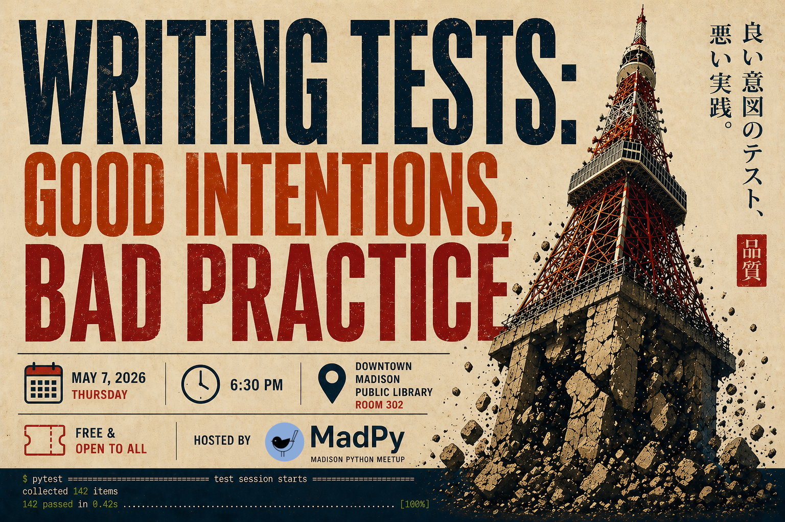

We know we're supposed to write tests for our software, but it always seems so difficult. In this talk Dave Hoese will describe the lessons learned and best practices developed while maintaining open source software. We'll focus on how tests should be approached and implemented by talking about gotchas and the traps that are easy to fall into. During this talk we'll go over some popular test plugins and utilities. Lastly, Dave will talk about his experience writing testing utilities for users.
Dave is a software developer at the Space Science and Engineering Center at the University of Wisconsin-Madison. He graduated with a Bachelor's degree in Computer Engineering from UW-Madison. Dave works on writing software tools to assist atmospheric scientists with a focus on analyzing satellite and ground-based instrument data.